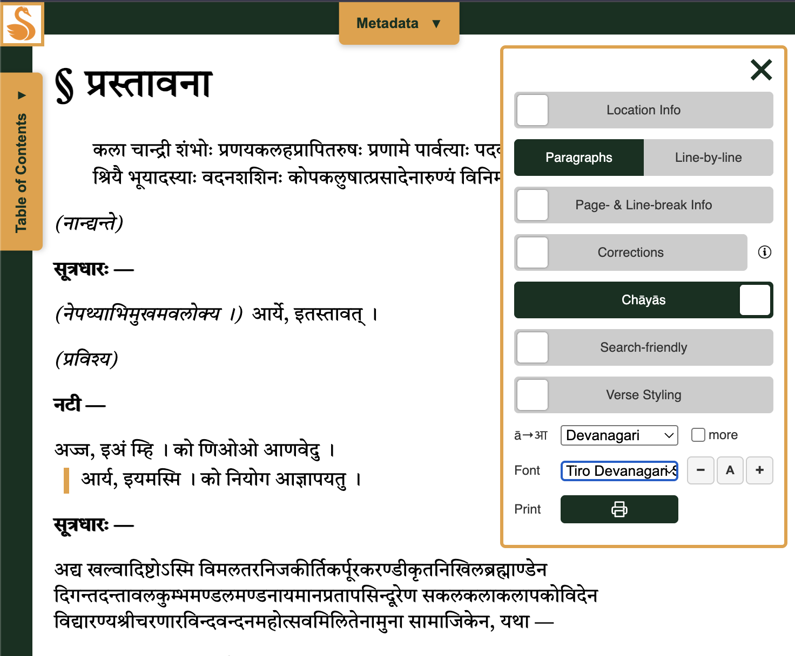

This is the second quarterly update ranging over all Kalpataru Grove projects and related research. See the 2026 Q1 post here.
This spring was fun!
Taking Stock
Skrutable got two big and interesting upgrades. One is a turbo-charged meter identification interface, which to me is similar to Pāṇḍitya in being a truly fun and video game-like way to do day-to-day Sanskrit work. The other is Sarvam Vision as a second OCR option, at a higher price point but delivering deliciously improved results.

The meter work led me to get really interested in the Mahāsubhāṣitasaṃgraha (MSS), which I'm now digitizing further and planning to shape into a meter identification benchmark. It's such an interesting reference work, we should at the very least have an e-text that covers all nine published volumes, rather than the five represented in GRETIL.
Not Kalpataru Grove per se, but I'll be gradually making more mention of the work I'm doing with Muktabodha as their new Technical Director. Along with colleagues Jason Schwartz and Ben Williams, we've put in a lot of work to creating a new interface, adding a bunch of new texts, and reviewing how we can clean up the collection overall. It's all slowly rolling out, not quite ready for prime-time yet. But I'd like folks to know it's something I've been doing.
HANSEL seems to have added only one text, Prabodhacandrodaya by Kṛṣṇa Miśra, and in fact, that item is still under construction. But in the meantime, Tyler Richard and I have collaborated to not only add Bhāskara's Unmattarāghava, but also spruce up the site a bit with more beautiful fonts (Tiro and Noto Serif) and a PDF print option. (EDIT: Released July… .)

At an infrastructure level, I made good progress on using the "Kalpataru Grove" idea not just as a branding idea, but as an actual load-bearing bit of infrastructure. The code repository now publicly represents shared tooling that I use to manage my projects (e.g., see PR list). This is good for transparency, but also because it helps me remember what I'm doing well where and that discoveries made while working on one project should benefit others when possible.
Looking forward
Q3 has lots in store. Merely in maintenance mode are Skrutable, Vātāyana, and Pāṇḍitya, but I'll likely start to write up Skrutable's improved meter capacities for publication. HANSEL is going to try to add a bunch of new material, including the MSS. My intended focus, however, will be at the multi-corpus level. First, SETI will get a badly-needed update. Second and more interesting: Exploratory work on Sanskrit Wikisource as an undervalued community resource was already shared informally as a prototype, and this will evolve into what may be Kalpataru Grove most useful component yet (new .info domain name already purchased!)
PLACEHOLDER: draft in progress, more to come.